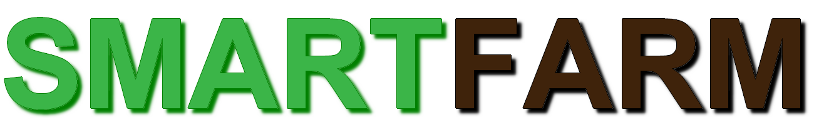

|
 | INICIO | SERVIÇOS |
Objetivo da SmartFarm | |
Não é segredo para ninguém que o nosso planeta está sofrendo diversas mudanças climáticas causadas pela poluição gerada pelo ser humano e que nós precisamos tornar nossas práticas mais sustantáveis. Sustentabilidade não se trata apenas de reduzir o consumo de recursos, ela leva em conta a capacidade de manter ou aumentar a produção,reduzindo os impactos no meio ambiente. Visando um cenário rural mais sustentável, nós da SmartFarm decidimos criar meios mais sustentáveis para o campo utilizando a tecnologia a nosso favor. Em busca de tornar o campo um lugar mais sustentável nosso trabalho não se limita a simplesmente reduzir impactos ambientais, ele tem o potencial de aumentar a sua produtividade. O aumento da produtividade se torna possível graças a um melhor gerenciamento de recursos, como formas de irrigação mais eficiente e redução de gastos com energia. | |
 | |